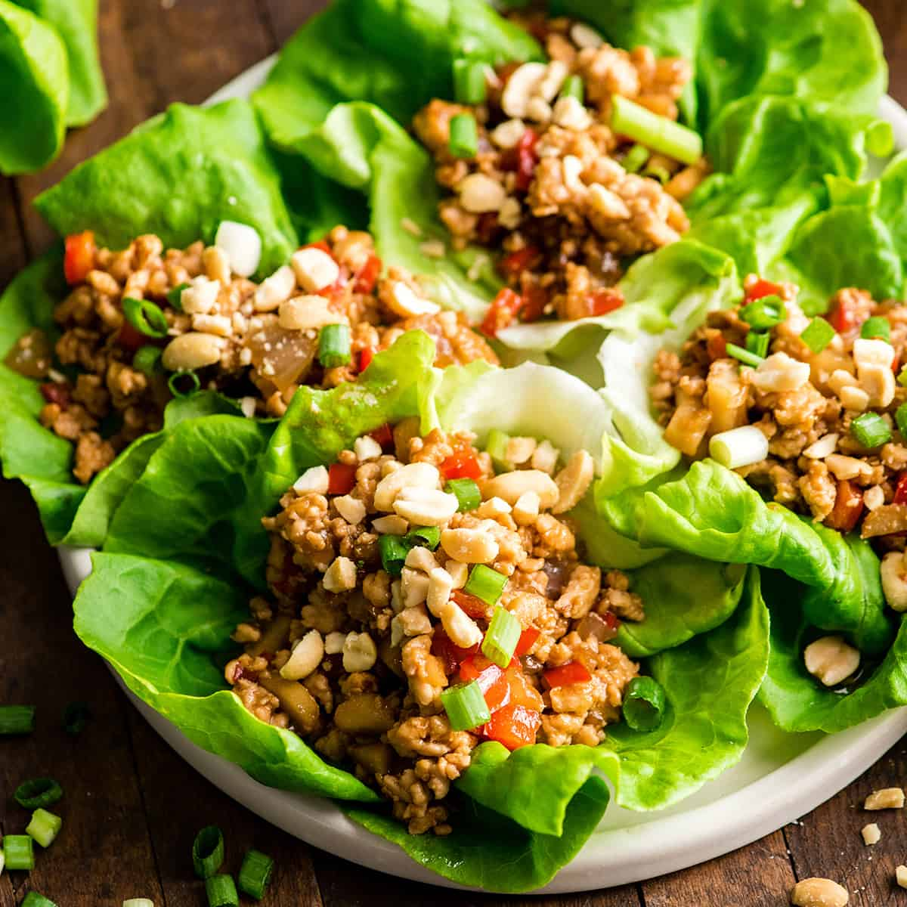

Go Back Home
Chicken and Black Bean Lettuce Wrap

Image credits to Joy Food Sunshine
Description
Filling plate of lunch with packed protein and fiber.
Prep time: 10 minutes, Cook time: 0 minutes, Serving: 1
Ingredients
- 110-150g cooked skinless chicken breast, shredded or finely diced
- 1/2 Cup cooked black beans, rinsed well
- 4-6 large crisp cos lettuce leaves
- 1/2 Cup diced tomato
- 1 Tbsp finely diced red onion
- Extra virgin olive oil, black pepper, coriander, lime juice, ground cumin for taste
Steps
- Warm the shredded chicken and rinsed black beans gently in microwave for 1-2 minutes (if liked chilled, skip this step)
- In a bowl, combine chicken, black beans, diced tomato, coriander, red onion, cumin, black pepper, olive oil, salt and lime juice. Toss gently so the flavors mix without mashing the beans.
- Arrange the crisp cos lettuce leaves on the plate like taco shells and spoon the chicken and black bean mixture evenly into each leaf. Serve immediately.